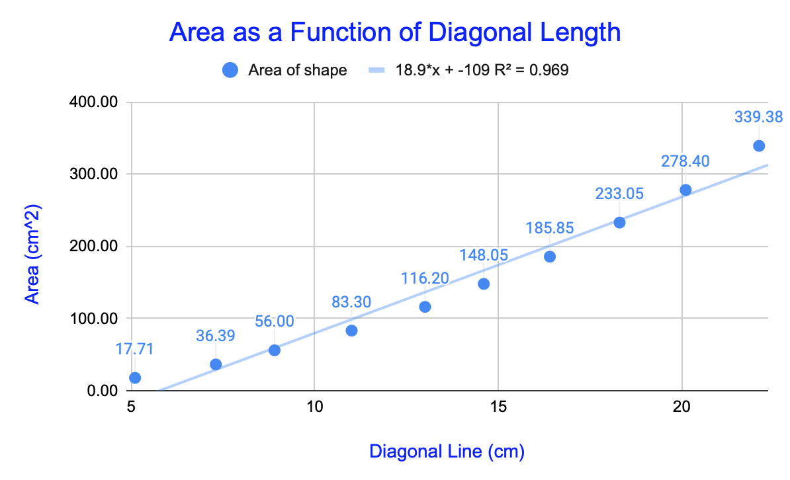
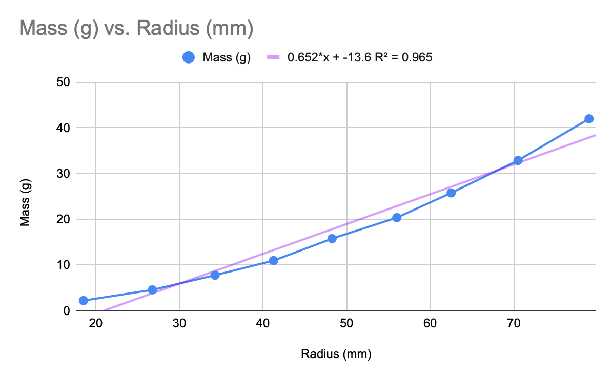
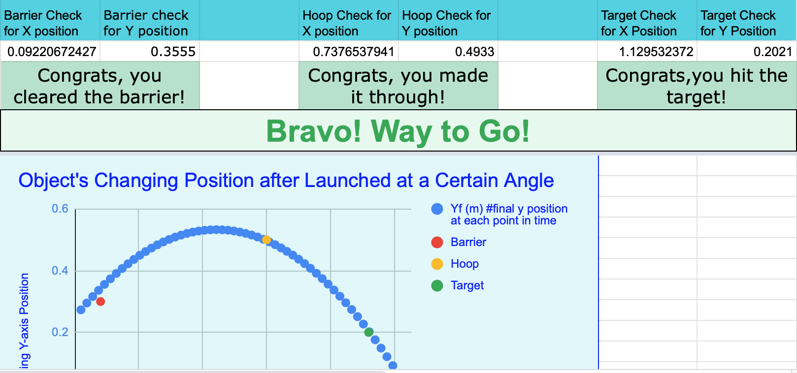
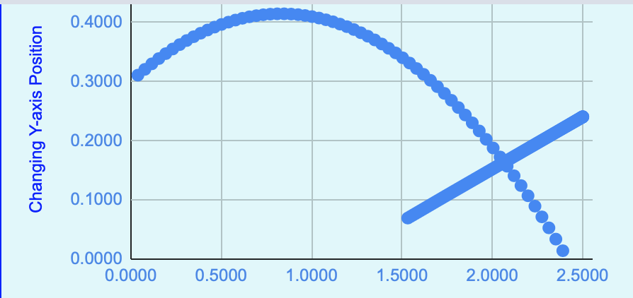

This model sets up the theoretical relationship between the diagonal length of one shape and the area of another shape. The error in measurement is also calculated.
Project 2: Theoretical Relationship between the Mass and Radius of Wooden Cyclinders
This model sets up the theoretical relationship between the radius and area of any wooden cylinder, using the densities and volumes of the cylinders as well. The masses, radii, volumes, and densities of each cylinder are given. The error in measurement is also calculated.

Project 3: Calculating the Acceleration due to Gravity
This model statistically and graphically demonstrates the acceleration due to gravity that was calculated from launching an object in free fall. Two photogate sensors tracked the object's velocity and the change in time as it passed through the sensors. The model also calculates the percent error of the acceleration value, using the known value of -9.8 m/s^2. There was a large margin of error (38.4%) in this project. If you click on the project title above, you will be directed towards the model.

Project 4: Projectile Motion
This model graphs the projectile motion of an object that clears a barrier, passes through a hoop, and reaches a target. By clicking on the title above for this project, you will be directed towards the spreadsheet model where you can change the positions of the barrier, hoop, and target as well as the initial angle and velocity at which the object is launched, and the initial position from where it is launched. If the object clears the barrier, goes through the hoop, and lands at the target, then the model will read "Bravo! Way to Go!". The graph will change as you make changes.
Project 4: Collision Between Two Objects in Motion
This model graphs two objects in motion that eventually collide with each other; one is in projectile motion while the other is moving down an inclined plane. The link embedded in the title of this project will bring you to the model, where you can interact with it. You can change the starting positions and angles of both objects in addition to their initial velocities. The graph will reflect these changes.
